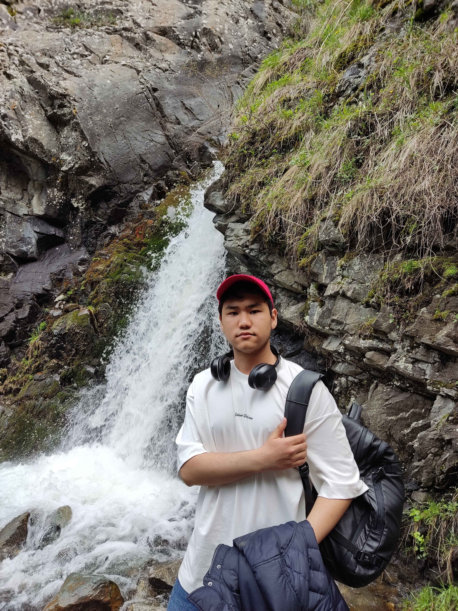

Hello, my name is Abylaykhan. I present my website by telling about myself. I am interested in information security.

My Hobbies and Entertainment
My hobbies include chess, football, ping pong and computer games, each of which brings unique pleasure and develops important skills.
Chess develops strategic thinking and patience, as each move requires a well-thought-out plan and concentration.
Football allows you to spend time actively and teaches you to work in a team, support your teammates and strive for a common goal.
Ping pong requires quick reactions and precision, developing coordination and strategic thinking.
Computer games immerse you in virtual worlds, developing creativity and the ability to make quick decisions.
These hobbies make my life rich and interesting, enriching it in many ways.